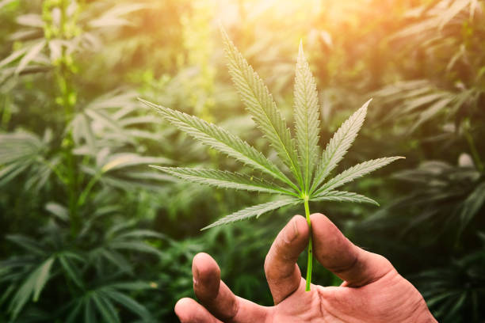

What is the importance of pH levels in cannabis cultivation?
Posted by on 2024-06-02
pH levels play a crucial role in cannabis cultivation as they directly affect the plant's ability to absorb nutrients and ultimately thrive. In simple terms, pH is a measure of how acidic or alkaline a substance is on a scale of 0 to 14, with 7 being neutral.
Cannabis plants prefer slightly acidic soil with a pH level between 6 and 7. When the pH level strays too far from this range, it can lead to nutrient deficiencies or toxicities that hinder the plant's growth and overall health. For example, if the soil is too acidic (below pH 6), essential nutrients like calcium, magnesium, and phosphorus may become locked up in the soil and unavailable to the plant.
On the other hand, if the soil is too alkaline (above pH 7), certain nutrients such as iron, manganese, and zinc may become less soluble and also inaccessible to the plant. This can result in stunted growth, yellowing leaves, or other visible signs of nutrient deficiencies.
Maintaining proper pH levels is also important for preventing diseases and pests that thrive in unbalanced environments. A healthy pH level promotes beneficial microbial activity in the soil which helps protect against harmful pathogens.
To ensure optimal growing conditions for cannabis plants, it is essential for cultivators to regularly test and adjust pH levels in their growing medium. This can be done using a simple pH meter or testing kit available at most gardening stores.
In conclusion, monitoring and maintaining appropriate pH levels are critical aspects of successful cannabis cultivation. By providing an ideal environment for nutrient uptake and overall plant health, cultivators can maximize yields and produce high-quality cannabis products.